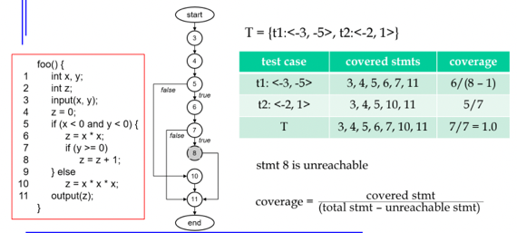
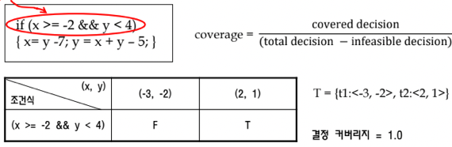
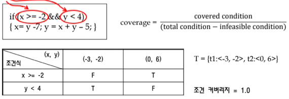
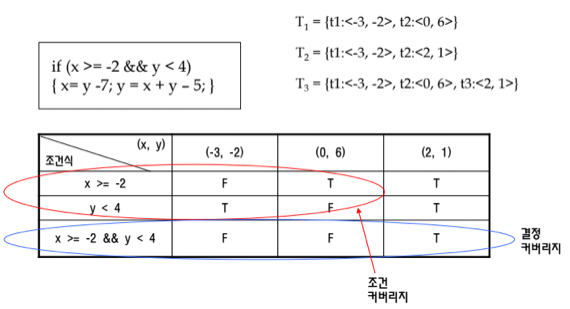
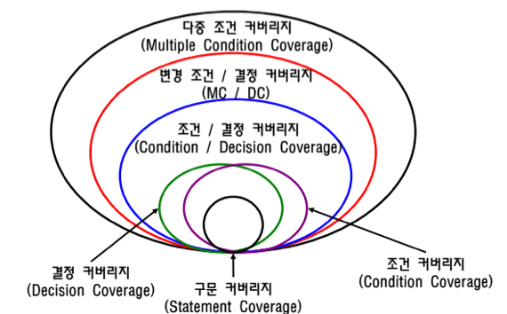

충남대학교 컴퓨터공학과 김현수 교수님의 "소프트웨어 공학" 강의를 필기한 내용입니다.
다소 잘못된 내용과 구어적 표현 이 포함되어 있을 수 있습니다.
Whitebox Testing
- Blackbox Testing와는 반대로 내부 논리구조를 테스트하는 방법이다
- 컴포넌트 레벨에서는 구문, 결정, 분기 등을 테스트 하고 모듈 레벨에서는 모듈간 호출관계 트리(Call Tree), 시스템 레벨에서는 메뉴, 프로세스 구조, GUI측면에서 테스트를 진행하게 된다
- 그리고 Whitebox Testing에서는 Converage라는 개념이 등장하는데
- 테스트 케이스 집합(Test Suite)으로 시스템 구조가 테스트된 정도를 말한다
- 뒤에서 계속 보겠지만 Coverage는 구문 테스팅을 할때는 코드의 어디어디가 실행되었나로 판단하게 되고 뭐 결정 Testing 을 할때는 어떤 분기나 경우의 수가 실행되었나로 판단하는 등 각각의 Test방법에 따라 Coverage를 구하는 방법은 달라진다
- Coverage 목표치를 정해놓고 해당 Coverage에 도달할때까지 Test Suite에 테스트케이스를 추가하며 테스트를 진행하게 되고 이렇게 함으로써 여러 경우에 수에 대한 테스트를 좀 더 체계적으로 진행할 수 있게 된다
Statement Testing & Coverage
- 말 그대로 어느 Statement가 실행되었고 어느 Statement가 실행되지 않았는지를 판단해 Coverage를 구하며 Test Suite를 조정하는 방법
- 얘는 Basic Block을 Statement 한줄로 하는 Control Flow Graph를 그리고 Test Suite의 테스트케이스를 진행하며 어느정도 Coverage가 나오는지 확인하는 방법이라고 생각하면 된다

- 컴파일러 강의를 제대로 들었고 위의 문장이 이해되면 위의 예시또한 어렵지 않게 이해할 수 있음
- 제일 왼쪽이 코드고 그 다음이 해당 코드의 Statement로 그린 CFG, 그리고 오른쪽이 해당 TS로 알아낸 Coverage이다
- 하는 방법은 TS의 테케를 돌리고 어디어디가 커버됐는지 확인한 뒤 Coverage를 구하면 되는데
- 이때 중요한건 total stmt에서 unreachable stmt의 갯수를 빼줘야 된다는 거다 - unreachable stmt를 빼지 않으면 절대로 100퍼가 나오지 않으므로 - 따라서 unreachable stmt를 coverage를 구하기 전에 반드시 구해줘야 한다
Decision Testing & Coverage
- 여기서의 Coverage는 하나의 분기문에 대해 참과 거짓으로 모두 분기했을때 Decision Coverage가 1이라고 본다
- 뒤에서 나올 Condition Coverage와는 다르게 Decision Coverage는 분기문의 조건식 전체에 대해 결과가 참이냐 거짓이냐로 Coverage를 계산한다는 점을 주의할 것
- 즉, 말그대로 Decision이기 때문에 양쪽의 분기방향에 대해서만 생각하게 되는거다

- 예시를 보면 당연히 저 if문이 Decision Point가 되고
- 예시로 주어진 TS을 실행해보면 F와 T가 골고루 나왔으므로 covered decision이 1인데 Decision의 총 갯수도 1개이기 때문에 100%의 Coverage가 나오게 되는 것
- 여기서는 if문이 하나밖에 없어서 Decision 의 갯수가 1개인거지만 if문이 여러개인 놈을 테스트할때는 Total Decision 값이 n인 것에 주의하셈
Condition Testing & Coverage
- 여기서는 Decision Testing과는 다르게 Decision Point의 Condition Expression 각각에 대해 참과 거짓이 모두 나와야 해당 condition이 cover된것으로 판단한다

- 예시를 보면
- Decision Point에 Condition Expression이 두개 있으므로 쟤네 각각에 대해 TF가 골고루 나와야 각각이 cover된 것으로 판단하게 됨
- 예제로 주어진 TS를 해보면 위 표에서 보는것처럼 x >= -2가 TF가 나오므로 이게 cover가 되고 y < 4도 TF가 골고루 나와 cover가 된다
- 따라서 total condition의 갯수가 2이고 covered condition도 2이므로 100%의 Condition Coverage가 나오게 된다
Multiple Condition Coverage
- 애는 Condition 각각이 TF가 나오는 경우에서 더 나아가 Condition들이 만들어낼 수 있는 모든 TF조합으로 판단하는 거다
- 예를들어 if(c1 BOOLOP c2)의 경우에 TT, TF, FT, FF 4개의 조합이 만들어지고 이 조합을 모두 충족해야 해당 Decision이 cover된 것으로 판단한다
- 따라서 Boolean Operation으로 연결된 Condition Expression이 n개 존재한다면 가능한 조합은 2^n이 되고 이것은 엄청나게 많은 수의 테케를 필요로 하므로 반드시 결함이 없어야되는 경우가 아니라면 진행하지 않는다
Testing들 간의 포함관계
- 뭔가 Condition Testing이 더 자세하기 때문에 이걸 만족하면 Decision Testing도 통과할거같지만 Condition Testing과 Decision Testing은 포함관계가 아니고 하나가 통과해도 나머지 하나가 실패하는 경우가 있기 때문에 두개를 반드시 수행해줘야 한다

- 위 표를 보면 모든 Test Case들에 대해 Condition Testing의 결과와 Decision Testing의 결과가 적혀있는데
- T1을 보면 Condition Testing는 TF가 골고루 나와 통과하지만 Decision Testing 에서는 FF가 나와 통과하지 못하게 되는 것을 볼 수 있음
- T2는 반대로 Decision Testing은 TF가 나와 통과하지만 Condition Testing에서는 두번째 테케가 TT가 나와 실패한다
- 따라서 T1와 T2를 합집합한 T3을 돌려야 Decision Testing과 Condition Testing을 모두 통과하게 되는 것

- 따라서 위와 같은 포함관계가 나오게 된다
개발 단계를 기준으로 한 테스트 분류
- Unit Test : 모듈 하나에 대한 테스트
- 주로 White Box Test를 진행한다
- Integration Test : 전역변수 이슈나 인터페이스 결함 등의 모듈간 통합 과정에서 일어날 수 있는 결함을 체크한다
- 그냥 모듈들을 다 합치고 한꺼번에 테스트하는 것을 Bing-Bang Test라고 하는데
- 저건 너무 무식하니까 모듈들을 붙여가며 서브시스템을 테스트하고 서브시스템도 붙여가며 테스트하는 Incremental Testing을 진행한다
- 이건 수평적으로 붙이면서 진행할때도 있고 수직적으로 붙이면서 수행할 때도 있음
- Top-down Testing은 UI에서 DB까지의 순서대로 내려가며 합치는 방법을 의미하고 이때 하위 시스템에 대해서는 사용하지 못하기 때문에 Test Stub을 이용해 하위 시스템에 대한 mock을 사용하여 테스트한다
- Bottom-up Testing은 DB에서 UI까지 올라가며 합치는 방법이고 이때 상위 시스템에 대한 mock으로 Test Driver를 이용한다
- 그리고 이 둘을 섞은 Sandwich Testing이 있음 - 얘는 UI를 테스트하고 DB를 테스트한 뒤 가운데를 테스트하는 방법이다 - 이때에도 하위나 상위 시스템에 대한 mock으로 Test Driver나 Test Stub을 사용한다
- System Test : 요구사항 명세를 기준으로 기능적, 비기능적(비기능 요구사항에 있었던 뭐 성능이나 이런것들) 테스트를 진행함
- Acceptance Testing : 실제 사용자들을 참여시켜 사용자의 요구대로 돌아가는지 확인함
- Alpha Test : 개발팀의 감독 하에 고객이 수행하는 테스트
- Beta Test : 임의의 사용자가 개발팀과는 무관한 환경에서 테스트하게 해볼 목적으로 사용자들이 직접 테스팅하고 문제점을 report하는 형태
- Open Beta Release로 일반인에게 임시 배포를 해 테스팅 하는 방법이 해당한다
테스터에 따른 분류
- Developer Test : 개발자나 연관된 테스팅 그룹에 의해 수행되는 테스트
- Independent Test : 무관한 제 3자에 의해 테스트하는 것